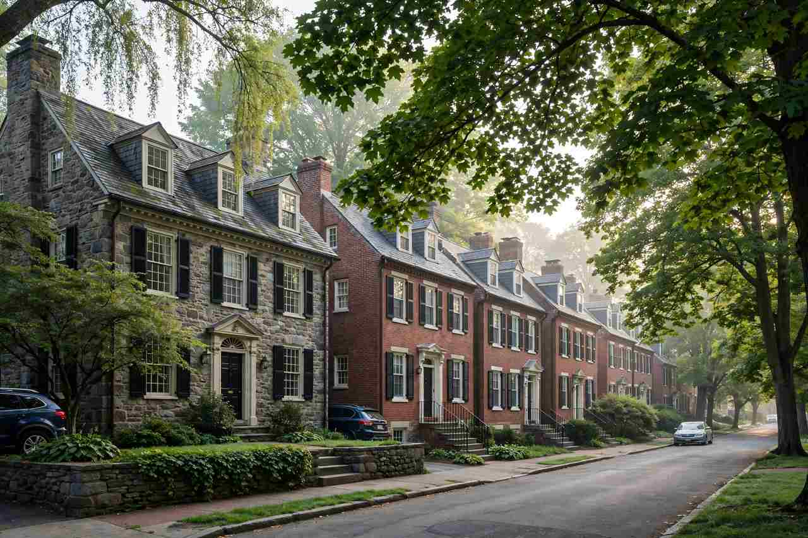

Rodent Control · Royersford, PA
Licensed Rodent Control in Royersford, PA
Murvo delivers same-day rodent control in Royersford for rats and mice in attics, walls, kitchens, and crawl spaces. Local crews start with a thorough inspection, then remove, exclude, and monitor until the problem is solved. You approve one flat-rate price in writing before any work starts, and every job carries a written guarantee across Montgomery County. Local crews cover 1 ZIP codes in the Royersford area, from Kimberton to the far side of Montgomery County.
24/7Availability
1ZIP codes covered
Same-dayResponse
Licensed · Upfront options · Written guarantees · Fully insured
Royersford at a glance
Local Rodent Control for Royersford, PA.
Montgomery County
Countysoutheast Pennsylvania
RegionReading · 23 mi
Nearest metro71 mile east of Harrisburg
From Harrisburg1
ZIP codes covered Service by service in Royersford
Rodent Control Services Available in Royersford
Thirty rodent services, one local standard in Royersford: inspection-led, exclusion-first, and quoted in writing before work begins. Browse the full list for Montgomery County below - each section explains what the service involves here, what it typically costs nationally, and how fast we can start.
- 01Rodent Control↗
- 02Rodent Inspection↗
- 03Rodent Removal↗
- 04Rodent Exclusion↗
- 05Rodent Proofing↗
- 06Rat Control↗
- 07Mice Control↗
- 08Mouse Removal↗
- 09Rat Removal↗
- 10Rodent Trapping↗
- 11Rodent Baiting↗
- 12Rodenticide Application↗
- 13Attic Rodent Removal↗
- 14Crawl Space Rodent Removal↗
- 15Wall Rodent Removal↗
- 16Kitchen Rodent Control↗
- 17Garage Rodent Control↗
- 18Commercial Rodent Control↗
- 19Residential Rodent Control↗
- 20Emergency Rodent Removal↗
- 21Same-Day Rodent Control↗
- 22Rodent Damage Repair↗
- 23Rodent Waste Cleanup↗
- 24Rodent Disinfection↗
- 25Rodent Odor Removal↗
- 26Dead Rodent Removal↗
- 27Rodent Dropping Cleanup↗
- 28Rodent Exclusion for Roofs↗
- 29Rodent Exclusion for Vents↗
- 30Rodent Exclusion for Chimneys↗
Rodent Control in Royersford
Rodent Control in Royersford
In pre-war rowhomes, brownstones, triple-deckers, and older single-family homes, rodents rarely use the front door. They follow basement foundations, sewer and pipe chases, shared party walls, and alley-facing garage and door seals, settle where it stays warm, and expand from there across Montgomery County homes. Our rodent control pairs careful identification of Norway rat (Rattus norvegicus) and House mouse (Mus musculus) with trapping, sealing, and monitoring, handled by licensed and insured technicians who document each stage for you.
In Royersford, rodent control is not a generic spray-and-go service. Rodents exploit basement foundations, sewer and pipe chases, shared party walls, and alley-facing garage and door seals in pre-war rowhomes, brownstones, triple-deckers, and older single-family homes, and a fix that ignores those routes does not last. Murvo's Royersford team inspects first, shows you the evidence - droppings, gnaw marks, entry gaps - and then lays out the work with a flat-rate written quote. We serve all of Montgomery County from Royersford, including Spring City, Trappe, and every job is covered by our written workmanship guarantee. In Royersford, rodent control calls most often involve pre-war rowhomes, brownstones, triple-deckers, and older single-family homes, where basement foundations, sewer and pipe chases, shared party walls, and alley-facing garage and door seals decide whether the fix holds.
Consider how a visit unfolds. Inside, attic and crawl-space evidence shapes the trapping plan, which is adjusted visit by visit as numbers change. Cleanup guidance covers contaminated areas safely, and exclusion work closes the route permanently. Throughout, photographs and written notes keep you informed, so progress is something you can see and verify rather than something you are asked to trust. The technician walks the exterior before touching anything indoors, noting gaps, rub marks, and food sources. Photographs taken at the start make those later comparisons honest, because memory alone tends to blur the details.
Booking takes one call, and same-day appointments are available in most Royersford areas. Work is carried out in stages, with trap checks and sealing visits booked ahead. At the final visit we walk the finished work together and confirm monitoring is clear. Your technician inspects first, talks you through the plan in plain language, and only starts once you approve the written quote. Questions are answered at every stage, day or night.
Need help quickly in Royersford? Call any time — the emergency line is staffed 24/7, and same-day rodent control appointments are available in most areas. We inspect first, explain the plan in plain language, and put the flat rate in writing before work starts. The written quote for your Royersford property will spell out exactly which of these applies before any work starts.
The honest answer is that it depends on species, activity level, and how much sealing your home needs, which is why Murvo inspects first and then gives you a flat-rate quote in writing. For national context only, Angi's 2026 data averages rat and mouse removal and control at $396, typically $189 to $655; that is not a Murvo price, and your written quote is the figure you pay.
Rodent Inspection in Royersford
Rodent Inspection in Royersford
You do not need to see a rodent to have a rodent problem in Royersford. Droppings in the attic, gnaw marks near basement foundations, sewer and pipe chases, shared party walls, and alley-facing garage and door seals, or noises after dark are enough reason to book a rodent inspection. Murvo technicians check the whole property, photograph what they find, and give you a prioritized plan plus a flat-rate written quote for any work recommended.
Homeowners in Royersford call Murvo for rodent inspection because the problem here is specific: Norway rat (Rattus norvegicus) pressure around pre-war rowhomes, brownstones, triple-deckers, and older single-family homes, tight access at basement foundations, sewer and pipe chases, shared party walls, and alley-facing garage and door seals, and activity that follows the local season. Our Montgomery County crews diagnose the real source before recommending work, explain the options in plain language, and quote one flat rate in writing. Across Royersford - including Spring City, Trappe - every visit is backed by licensed, insured technicians and our written workmanship guarantee. Coverage for rodent inspection spans 1 ZIP codes in Montgomery County, including 19468.
The inspection starts outside, where we check the foundation, siding, pipe penetrations, garage doors, and roof junctions, because mice can squeeze through a gap the width of a pencil. Inside, we examine the attic, crawl space, insulation, stored items, and food areas for droppings, nests, rub marks, and gnaw damage. We also note where pre-war rowhomes, brownstones, triple-deckers, and older single-family homes create hidden routes through basement foundations, sewer and pipe chases, shared party walls, and alley-facing garage and door seals. Every finding is photographed and explained, and recommendations are marked urgent or preventive so you can stage the work sensibly.
Booking a rodent inspection in Royersford takes one call, and same-day appointments are often available. Findings are explained with photos before you receive a flat-rate written quote for any recommended work. Nothing proceeds without your approval, and urgent items are clearly flagged. Your technician arrives on time, walks the property with you, and inspects the attic, crawl space, and exterior in one visit. You keep the full written report either way.
Inspections are the fastest way we help in Royersford: same-day appointments are available in most areas, and urgent calls are answered 24/7. A typical rodent inspection takes under an hour for most homes, and you leave the visit with photos, written findings, and a flat-rate quote for any work we recommend, so decisions never wait on us. If you are seeing signs now, an inspection this week is the fastest way to know which situation you are in.
Nationally, a professional rodent inspection typically runs $100 to $200 according to Angi's 2026 data, and it is often credited toward the job if you proceed. Murvo confirms your exact rodent inspection price before the visit and quotes any follow-up work as a flat rate in writing after inspection, so the figure you approve is the figure you pay, with no hourly billing.
Rodent Removal in Royersford
Rodent Removal in Royersford
Finding droppings in the kitchen or hearing scratching overhead in Royersford means rodents are already living indoors, and they will not leave on their own. Murvo's rodent removal clears active Norway rat (Rattus norvegicus) and House mouse (Mus musculus) with targeted trapping, removes animals hygienically, and closes the entry points behind them. One flat-rate written quote covers the program before work begins.
In Royersford, rodent removal is not a generic spray-and-go service. Rodents exploit basement foundations, sewer and pipe chases, shared party walls, and alley-facing garage and door seals in pre-war rowhomes, brownstones, triple-deckers, and older single-family homes, and a fix that ignores those routes does not last. Murvo's Royersford team inspects first, shows you the evidence - droppings, gnaw marks, entry gaps - and then lays out the work with a flat-rate written quote. We serve all of Montgomery County from Royersford, including Spring City, Trappe, and every job is covered by our written workmanship guarantee. In Royersford, rodent removal calls most often involve pre-war rowhomes, brownstones, triple-deckers, and older single-family homes, where basement foundations, sewer and pipe chases, shared party walls, and alley-facing garage and door seals decide whether the fix holds.
Removal starts with an assessment of species, numbers, and access routes across attics, wall voids, garages, and kitchens. Catch records show progress clearly instead of relying on guesswork. Removal is followed immediately by entry-point exclusion, because new rodents will replace removed ones through any gap left open, and disinfection is arranged after heavy activity. Once you approve the written quote, technicians set traps along proven runways, check them on schedule, and remove animals promptly and hygienically. Photos document each stage for you.
Once removal is underway, expect short, predictable visits. When catches reach zero, monitoring confirms it, sealing is discussed, and the job closes with a walkthrough and your guarantee paperwork in hand before we leave. Your technician checks each mapped trap, removes catches hygienically, resets what is still needed, and updates the record with you. At close, prevention advice is tailored to what actually attracted rodents to your property, not copied from a generic checklist.
When rodents are active indoors in Royersford, waiting rarely helps. Rodent removal can usually start the same day you call, our line answers 24/7 for a rodent loose in a living area, and the first visit sets traps straight away. Scheduled returns then clear and reset them until monitoring shows the home is clear. If you are seeing signs now, an inspection this week is the fastest way to know which situation you are in.
How many animals are active, which species they are, and how much sealing follows removal all shape the price, so we assess first and then quote one flat rate in writing. Angi's 2026 national context — an average of $396 and a typical $189 to $655 range for rat and mouse removal — is provided for comparison only; your written quote is the exact Murvo figure.
Rodent Exclusion in Royersford
Rodent Exclusion in Royersford
Trapping alone only buys time if rodents can walk straight back in. Rodent exclusion in Royersford is the permanent fix: a full entry-point survey, then sealing with materials rodents cannot gnaw through. Murvo clears active animals first so none are sealed inside, gives one flat-rate written quote before work starts, and guarantees the workmanship on every seal installed.
Homeowners in Royersford call Murvo for rodent exclusion because the problem here is specific: Norway rat (Rattus norvegicus) pressure around pre-war rowhomes, brownstones, triple-deckers, and older single-family homes, tight access at basement foundations, sewer and pipe chases, shared party walls, and alley-facing garage and door seals, and activity that follows the local season. Our Montgomery County crews diagnose the real source before recommending work, explain the options in plain language, and quote one flat rate in writing. Across Royersford - including Spring City, Trappe - every visit is backed by licensed, insured technicians and our written workmanship guarantee. The Royersford crews who handle rodent exclusion also handle the follow-through - proofing, cleanup, and monitoring - so one visit can close the whole problem.
Before any sealing, active rodents are cleared with trapping so nothing is trapped inside the structure. We then work opening by opening around basement foundations, sewer and pipe chases, shared party walls, and alley-facing garage and door seals, rooflines, and utility penetrations, photographing each finished seal. Because exclusion removes the route in rather than relying on chemicals, it reduces the need for rodenticides and supports pet-safe, no-poison control. A final walkthrough shows you every protected opening, and monitoring checks confirm no new activity appears at sealed points. Every seal is listed on your written guarantee.
Before sealing day, confirm pets are secured and access to the roofline and foundation is clear. The crew then works through the agreed list, checks that no animals remain inside, and fits each seal cleanly. Afterwards you receive the photographs, the guarantee, and a date for the follow-up check that confirms everything is holding as intended. If monitoring ever finds fresh activity at a sealed point, that written inventory tells us exactly what to inspect first.
The first step is a survey, and in Royersford we can often schedule that survey the same day you call about rodent exclusion. Sealing follows once active animals are cleared — nothing is ever sealed inside — and most homes are fully sealed within days, with entry points near wiring or food areas handled first. That is also why Murvo pairs removal with exclusion in Royersford - treating the animal without closing basement foundations, sewer and pipe chases, shared party walls, and alley-facing garage and door seals rarely lasts.
After the survey of your Royersford home, every opening that needs sealing is listed and priced as one flat-rate written quote, so you pay only for the work your property needs. For national context, Angi's 2026 data puts basic exclusion at $200 to $600 depending on access and the number of openings; that benchmark is not a Murvo price.
Rodent Proofing in Royersford
Rodent Proofing in Royersford
As colder weather approaches Montgomery County, rodents actively hunt for warm indoor shelter, and unsealed homes are found fast. A Murvo rodent proofing survey checks the roofline, vents, utility entries, and doors before that rush begins. Because proofing prevents infestations instead of reacting to them, it reduces reliance on baits and is backed by our written workmanship guarantee.
Homeowners in Royersford call Murvo for rodent proofing because the problem here is specific: Norway rat (Rattus norvegicus) pressure around pre-war rowhomes, brownstones, triple-deckers, and older single-family homes, tight access at basement foundations, sewer and pipe chases, shared party walls, and alley-facing garage and door seals, and activity that follows the local season. Our Montgomery County crews diagnose the real source before recommending work, explain the options in plain language, and quote one flat rate in writing. Across Royersford - including Spring City, Trappe - every visit is backed by licensed, insured technicians and our written workmanship guarantee. In Royersford, rodent proofing calls most often involve pre-war rowhomes, brownstones, triple-deckers, and older single-family homes, where basement foundations, sewer and pipe chases, shared party walls, and alley-facing garage and door seals decide whether the fix holds.
Proofing divides naturally into structure, surroundings, and habits. Surroundings means trimming branches back from the roofline, moving clutter and timber away from walls, and reducing sheltered harborage. Habits means securing pet food, bird seed, and stored produce so the property stops advertising itself. Structure means sealing utility entries, screening vents and chimneys, and fitting sweeps where doors leak light. Technicians assess all three layers in one survey and rank the combined findings by impact, not by what is easiest to sell.
Arrange a survey at a time that suits you; there is no emergency, so scheduling stays relaxed. You then receive a written quote separating essential work from optional improvements, and nothing proceeds without your say-so. Your technician walks every side of the property with you, photographs weak points, and talks through the plan in plain language. Staging the work is fine; essential sealing can proceed first while optional improvements wait until a season or budget that suits you better.
Proofing is planned work rather than an emergency, but you can still move fast: rodent proofing surveys in Royersford are often available the same day and always within a few days. Once you approve the plan, most work is finished in a single visit, ideally before colder weather drives rodents indoors. That is also why Murvo pairs removal with exclusion in Royersford - treating the animal without closing basement foundations, sewer and pipe chases, shared party walls, and alley-facing garage and door seals rarely lasts.
We survey your Royersford property first, separate the quick wins you can handle yourself from the specialist sealing, and quote the professional work as one flat rate in writing so spending can be staged. Angi's 2026 national context puts exclusion, the core of proofing, at $200 to $600 for basic work — a benchmark only, not a Murvo price.
Rat Control in Royersford
Rat Control in Royersford
In pre-war rowhomes, brownstones, triple-deckers, and older single-family homes, rats exploit structure and routine together, traveling fences and pipes to reach food near basement foundations, sewer and pipe chases, shared party walls, and alley-facing garage and door seals. Our rat control across Montgomery County checks attics, basements, drains, and outbuildings as one connected system, because treating a single room while harborage survives elsewhere simply moves the problem around the property.
When you need rat control in Royersford, the job starts with what is actually happening in your part of Montgomery County. Murvo crews work Royersford every week, so they know how Norway rat (Rattus norvegicus) and House mouse (Mus musculus) behave around pre-war rowhomes, brownstones, triple-deckers, and older single-family homes here - and where they get in: basement foundations, sewer and pipe chases, shared party walls, and alley-facing garage and door seals. We arrive equipped for the full job, confirm the flat rate in writing before work begins, and cover the whole Royersford area, including Spring City, Trappe. No call-center runaround and no open-ended hourly billing - just a local crew, a clear plan, and a written quote you approve first. In Royersford, rat control calls most often involve pre-war rowhomes, brownstones, triple-deckers, and older single-family homes, where basement foundations, sewer and pipe chases, shared party walls, and alley-facing garage and door seals decide whether the fix holds.
Control starts with species and route identification, because roof rats and Norway rats behave and enter very differently. We then pair the program with roofline and entry-point exclusion, plus attic removal and cleanup where nests are found overhead. Technicians pre-bait unset traps along proven runways so wary rats feed confidently, then set them and return to check, clear, and adjust placements until activity stops. Trapped rats are removed hygienically, and each visit is documented with locations and counts. Progress is visible at every visit.
After booking, we confirm access to attics, basements, and outbuildings so the first visit is productive. On arrival, your background-checked technician walks the property with you, sets out the plan, and starts pre-baiting straight away once you approve the quote. Follow-up visits are booked ahead, trapped rats are removed promptly, and a final monitoring check verifies the result before sign-off under our written workmanship guarantee. You see documented progress at each visit.
Rats do not wait, and neither do we: rat control in Royersford can usually start with a same-day inspection, and urgent calls are answered 24/7. Pre-baiting begins on the first visit once you approve the written quote, traps are set as soon as rats are feeding confidently, and scheduled checks keep the program moving until activity stops. In Montgomery County, activity follows the local season, so timing the work matters as much as the method.
Rat work varies with species, colony size, and how many entry points need sealing, so Murvo inspects first and quotes one flat rate in writing. For national context only, Angi's 2026 data averages rat control and removal at $396, typically $189 to $655. That benchmark is not a Murvo price; the written quote for your Royersford home is the exact figure you pay.
Mice Control in Royersford
Mice Control in Royersford
How many mice does one sighting usually mean? More than one, and the colony grows while treatment waits. Murvo builds mice control around trapping and sealing rather than bait, uses licensed, insured technicians, and confirms the result with follow-up monitoring, so a quiet week is verified instead of simply hoped for.
In Royersford, mice control is not a generic spray-and-go service. Rodents exploit basement foundations, sewer and pipe chases, shared party walls, and alley-facing garage and door seals in pre-war rowhomes, brownstones, triple-deckers, and older single-family homes, and a fix that ignores those routes does not last. Murvo's Royersford team inspects first, shows you the evidence - droppings, gnaw marks, entry gaps - and then lays out the work with a flat-rate written quote. We serve all of Montgomery County from Royersford, including Spring City, Trappe, and every job is covered by our written workmanship guarantee. The Royersford crews who handle mice control also handle the follow-through - proofing, cleanup, and monitoring - so one visit can close the whole problem.
The program starts with an activity and entry-point survey covering kitchens, attics, wall voids, and under-floor spaces. We then seal pencil-width gaps, including the overlooked routes behind baseboards and where pipes and wires pass through floors, and advise on cleaning scent-marked surfaces. Traps are placed in clusters along baseboards, behind appliances, and in attic voids, because mice travel the same short routes nightly. Technicians return to clear and reset traps and track numbers until they reach zero. Follow-up monitoring confirms the result before sign-off.
Book with one call and tell us which rooms show signs; same-day surveys are often possible. Your technician inspects kitchen, attic, and voids, explains the route map, and quotes in writing before traps are set. Check visits are scheduled immediately, and each one reports catches plainly until the final confirmation visit shows activity has stopped. The final confirmation matters, because mice can go quiet briefly while a nest remains, and monitoring distinguishes quiet from genuinely finished.
Mice programs move quickly in Royersford: a mice control survey can often be arranged the same day you call, and traps are set on that first visit once you approve the quote. Because mice investigate new objects fast, catches usually begin quickly, and scheduled check visits follow until a final confirmation shows activity has fully stopped. The written quote for your Royersford property will spell out exactly which of these applies before any work starts.
Mouse work is priced by the number of rooms affected and the amount of sealing involved, so Murvo surveys first and quotes one flat rate in writing. For national context only, Angi's 2026 data averages rat and mouse control and removal at $396, typically $189 to $655. That is not a Murvo price; your written quote is exact.
Mouse Removal in Royersford
Mouse Removal in Royersford
Most Royersford removal jobs begin in one room and end with evidence in three, because mice nest close to food and travel widely at night. Murvo surveys room by room, runs traps at every active site, and seals behind the work. The full program is one flat-rate written quote.
In Royersford, mouse removal is not a generic spray-and-go service. Rodents exploit basement foundations, sewer and pipe chases, shared party walls, and alley-facing garage and door seals in pre-war rowhomes, brownstones, triple-deckers, and older single-family homes, and a fix that ignores those routes does not last. Murvo's Royersford team inspects first, shows you the evidence - droppings, gnaw marks, entry gaps - and then lays out the work with a flat-rate written quote. We serve all of Montgomery County from Royersford, including Spring City, Trappe, and every job is covered by our written workmanship guarantee. Seasonal timing matters for mouse removal in Royersford: rodents surge in Royersford from October through March.
We favor trap-based, no-poison removal, which is safer around children and pets and avoids mice dying in hidden voids. We also advise on safe cleaning of cabinets and storage areas afterwards, so your kitchen feels properly yours again once the program is complete and monitoring confirms zero activity. Sealing then closes the route permanently. Cleanup follows CDC guidance: droppings and nesting debris are never dry-swept, because that can spread contamination; surfaces are disinfected first, then waste is removed hygienically. That finish is guaranteed in writing.
Booking takes one call. At sign-off we review catch records together, confirm sealing is complete, and leave you with guarantee paperwork and prevention advice. We agree a time window, and your background-checked technician arrives ready to survey attics, cabinets, and voids in one visit. Work begins only after you approve the written quote, and trap checks are booked ahead so nothing drifts. Rooms are confirmed fully safe to use again.
For mice active in kitchens or living areas of your Royersford home, mouse removal can often begin the same day you call. That first visit surveys nesting sites and sets traps as soon as you approve the quote, and because mice investigate traps quickly, catches usually start fast. Return visits continue until numbers reach zero. In Montgomery County, most cases involve the Norway rat (Rattus norvegicus) and the House mouse (Mus musculus), so the inspection focuses on their routes first.
Mouse removal cost reflects the number of rooms involved and how much sealing is needed, which is why Murvo surveys first and quotes a flat rate in writing. For national context only, Angi's 2026 data averages rat and mouse removal at $396, typically $189 to $655. That benchmark is not a Murvo price; your written quote covers your exact program.
Rat Removal in Royersford
Rat Removal in Royersford
In pre-war rowhomes, brownstones, triple-deckers, and older single-family homes, where rats enter decides how removal unfolds. Roof-level access through basement foundations, sewer and pipe chases, shared party walls, and alley-facing garage and door seals points toward attic work; ground burrows suggest basements and drains across Montgomery County. Our licensed technicians trace the whole route for Norway rat (Rattus norvegicus) and House mouse (Mus musculus), remove the colony, and sanitize areas where nests contaminated insulation or stored items.
Homeowners in Royersford call Murvo for rat removal because the problem here is specific: Norway rat (Rattus norvegicus) pressure around pre-war rowhomes, brownstones, triple-deckers, and older single-family homes, tight access at basement foundations, sewer and pipe chases, shared party walls, and alley-facing garage and door seals, and activity that follows the local season. Our Montgomery County crews diagnose the real source before recommending work, explain the options in plain language, and quote one flat rate in writing. Across Royersford - including Spring City, Trappe - every visit is backed by licensed, insured technicians and our written workmanship guarantee. Around Kimberton, Sanatoga, Evansburg, the pattern is similar: House mouse (Mus musculus) finds basement foundations, sewer and pipe chases, shared party walls, and alley-facing garage and door seals first, and lasting rat removal has to close those routes.
Removal stays trap-led and exclusion-backed throughout. Monitoring devices and a documented final walkthrough then prove activity has ended, and proofing advice covers drains, vents, and rooflines going forward. Locked bait stations appear only where a site genuinely justifies them, positioned away from pets and food, labeled, and monitored on schedule; loose bait is never used. After clearance, contaminated areas are sanitized carefully, with surfaces disinfected before cleaning and droppings never dry-swept. That written evidence stays with you, including the monitoring readings that supported the decision to sign off.
Book rat removal in Royersford and we will agree a visit time, with same-day appointments available for active infestations. Your technician assesses species and colony size, explains the program, and confirms a flat-rate written quote before trapping starts. Repeat visits are scheduled ahead to remove animals and adjust traps. At the end, monitoring and a walkthrough confirm clearance, backed by our written workmanship guarantee. You see documented evidence of the result.
In Royersford, rat removal can usually start the same day you call, with 24/7 answering for rats active in living areas. Pre-baiting begins on the first visit after you approve the written quote, and traps are set once rats feed confidently, typically within days. Repeat visits then run frequently until monitoring confirms the colony is gone. In Montgomery County, activity follows the local season, so timing the work matters as much as the method.
Rat removal pricing depends on colony size, access, and the sealing needed afterwards, so Murvo assesses your property first and quotes a flat rate in writing. For national context only, Angi's 2026 data averages rat removal at $396, typically $189 to $655. That is a benchmark, not a Murvo price, and your written quote covers the full program described.
Rodent Trapping in Royersford
Rodent Trapping in Royersford
In pre-war rowhomes, brownstones, triple-deckers, and older single-family homes, species behavior drives every choice. Wary Norway rats (Rattus norvegicus) need days of pre-baiting before unset traps can be armed, while House mice (Mus musculus) investigate clustered traps quickly near basement foundations, sewer and pipe chases, shared party walls, and alley-facing garage and door seals routes across Montgomery County. Our technicians match device, bait, and position to that behavior instead of relying on a single generic setup.
When you need rodent trapping in Royersford, the job starts with what is actually happening in your part of Montgomery County. Murvo crews work Royersford every week, so they know how Norway rat (Rattus norvegicus) and House mouse (Mus musculus) behave around pre-war rowhomes, brownstones, triple-deckers, and older single-family homes here - and where they get in: basement foundations, sewer and pipe chases, shared party walls, and alley-facing garage and door seals. We arrive equipped for the full job, confirm the flat rate in writing before work begins, and cover the whole Royersford area, including Spring City, Trappe. No call-center runaround and no open-ended hourly billing - just a local crew, a clear plan, and a written quote you approve first. Homes near Kimberton tend to show activity first in Royersford, which is why inspections start with basement foundations, sewer and pipe chases, shared party walls, and alley-facing garage and door seals.
Adjustment is where experience shows. Baits are refreshed and matched to what the species is already eating nearby. Households receive a simple map of device locations and safety guidance for children and pets. As numbers fall toward zero, attention shifts to exclusion recommendations and cleanup, converting a trapping program into lasting protection. If catches cluster at one end of a runway, placements concentrate there; if a route goes quiet while another warms up, devices move accordingly. Households can follow that adjustment process through the shared catch log, which records every change of position.
Book rodent trapping in Royersford and a technician can often start the same day. Scheduled returns clear and reset traps and share catch records with you. When numbers reach zero, we confirm monitoring is clear and discuss sealing. The first visit inspects, maps activity, and places or pre-baits traps; you approve a flat-rate written quote covering the program including check visits before we proceed. The finished program is guaranteed in writing.
In Royersford, rodent trapping can usually start the same day you call, with traps placed or pre-baiting begun on the first visit after you approve the quote. Mice often investigate within the first night; wary rats need a few days of pre-baiting before traps are set. Scheduled check visits then keep catches moving until numbers reach zero. Around Royersford, pre-war rowhomes, brownstones, triple-deckers, and older single-family homes give rodents the most cover, which is why entry points get checked before traps are set.
Rather than charging by the trap or by the visit, Murvo inspects first and quotes rodent trapping as one flat rate in writing for the complete program, including its check visits. Price depends on species, activity level, and how many checks are needed, and there is no hourly billing at any stage, so there are no per-visit surprises.
Rodent Baiting in Royersford
Rodent Baiting in Royersford
In pre-war rowhomes, brownstones, triple-deckers, and older single-family homes, bait has a narrow, specific job: reducing outdoor pressure while sealing removes the indoor route through basement foundations, sewer and pipe chases, shared party walls, and alley-facing garage and door seals. Our technicians in Montgomery County place secured stations along runways away from play areas, label and photograph each one, and check consumption on schedule until activity ends and stations come out.
Homeowners in Royersford call Murvo for rodent baiting because the problem here is specific: Norway rat (Rattus norvegicus) pressure around pre-war rowhomes, brownstones, triple-deckers, and older single-family homes, tight access at basement foundations, sewer and pipe chases, shared party walls, and alley-facing garage and door seals, and activity that follows the local season. Our Montgomery County crews diagnose the real source before recommending work, explain the options in plain language, and quote one flat rate in writing. Across Royersford - including Spring City, Trappe - every visit is backed by licensed, insured technicians and our written workmanship guarantee. Around Kimberton, Sanatoga, Evansburg, the pattern is similar: House mouse (Mus musculus) finds basement foundations, sewer and pipe chases, shared party walls, and alley-facing garage and door seals first, and lasting rodent baiting has to close those routes.
Where baiting is not appropriate indoors, we say so, and recommend trapping first followed by proofing of gaps around pipes, vents, and doors. Consumption records from each visit show whether activity is falling, holding, or moving, guiding whether stations stay, move, or come out entirely in favor of sealing and trapping alone. That exclusion-first approach reduces reliance on bait over time, which matters for households with children, pets, or visiting wildlife in Royersford. You receive those records after every monitoring visit.
Booking rodent baiting in Royersford starts with an inspection, not a station. Your technician maps activity, reviews pet, child, and wildlife concerns with you, and confirms a flat-rate written quote before anything is placed. Approved stations are installed locked and labeled the same visit, with locations photographed for you. Monitoring visits are scheduled before we leave, and stations come out once activity is confirmed clear. Your written guarantee covers the full program.
Deliberate setup matters more than speed with rodent baiting, but the first step is still fast: an inspection in Royersford can often be arranged the same day you call. Stations are placed only after activity is mapped and you approve the written quote and each location, then monitoring runs on a fixed schedule until consumption stops and activity is confirmed clear. The written quote for your Royersford property will spell out exactly which of these applies before any work starts.
How many locked stations your property needs and how long monitoring runs determine the cost, so Murvo inspects and maps activity first, then quotes one flat rate in writing covering placement and scheduled checks. There are no per-visit surprises, and because the approach is exclusion-first, the aim is to reduce and eventually remove stations rather than maintain them forever.
Rodenticide Application in Royersford
Rodenticide Application in Royersford
What does the law in Pennsylvania allow, and what will you be told? State rules restrict certain rodenticides, and Murvo complies with every applicable rule on every job. You receive label and safety information for any product used at your Royersford property before application begins.
When you need rodenticide application in Royersford, the job starts with what is actually happening in your part of Montgomery County. Murvo crews work Royersford every week, so they know how Norway rat (Rattus norvegicus) and House mouse (Mus musculus) behave around pre-war rowhomes, brownstones, triple-deckers, and older single-family homes here - and where they get in: basement foundations, sewer and pipe chases, shared party walls, and alley-facing garage and door seals. We arrive equipped for the full job, confirm the flat rate in writing before work begins, and cover the whole Royersford area, including Spring City, Trappe. No call-center runaround and no open-ended hourly billing - just a local crew, a clear plan, and a written quote you approve first. Coverage for rodenticide application spans 1 ZIP codes in Montgomery County, including 19468.
Monitoring data guides the whole treatment: whether it continues, changes product, or stops entirely in favor of proofing alone. We prioritize sealing entry points with exclusion and physical removal so dependence on chemical control shrinks visit by visit. Dead rodents are retrieved promptly where accessible, stations are kept away from pet and child areas, and every product used is documented with its label and safety information, so nothing applied at your property is ever hidden from you. State restrictions are checked before product selection.
Start with the inspection, often bookable the same day, and expect alternatives explained before products are discussed. Application happens only after approval, with monitoring visits scheduled and a clear stopping point agreed in advance. Your licensed technician confirms whether treatment is justified, reviews safety information with you, and provides the written quote. You can pause or stop the program at any point, and stopping triggers removal of stations rather than leaving them behind unattended.
In Royersford, rodenticide application begins with an inspection we can often schedule the same day you call, because no responsible application happens without one. If treatment is justified and you approve the written quote, locked stations are installed on that visit. Monitoring then runs on schedule, and treatment stops as soon as data shows activity has ended. That is also why Murvo pairs removal with exclusion in Royersford - treating the animal without closing basement foundations, sewer and pipe chases, shared party walls, and alley-facing garage and door seals rarely lasts.
Application cost depends on the number of locked stations, the product required under Pennsylvania rules, and how long monitoring runs. Murvo inspects first, explains whether trapping or exclusion could avoid chemical control entirely, and then quotes one flat rate in writing before work begins. The quote covers scheduled monitoring visits, so there are no per-visit surprises later.
Attic Rodent Removal in Royersford
Attic Rodent Removal in Royersford
When chewed wiring appears overhead, treat it as urgent; damaged cables are a real fire risk. Murvo prioritizes those Royersford attics, clears animals with targeted trapping rather than poison, leaves monitoring briefly after sealing to confirm nothing remains inside, and backs the finished work with a written workmanship guarantee.
In Royersford, attic rodent removal is not a generic spray-and-go service. Rodents exploit basement foundations, sewer and pipe chases, shared party walls, and alley-facing garage and door seals in pre-war rowhomes, brownstones, triple-deckers, and older single-family homes, and a fix that ignores those routes does not last. Murvo's Royersford team inspects first, shows you the evidence - droppings, gnaw marks, entry gaps - and then lays out the work with a flat-rate written quote. We serve all of Montgomery County from Royersford, including Spring City, Trappe, and every job is covered by our written workmanship guarantee. The Royersford crews who handle attic rodent removal also handle the follow-through - proofing, cleanup, and monitoring - so one visit can close the whole problem.
Attic work divides into clearing, closing, and confirming. Photographs document conditions at each stage, including insulation damage and any wiring concerns found overhead. Clearing means targeted traps set where droppings and runways concentrate, checked on schedule until catches end. Closing means roofline exclusion: metal mesh and sealed flashing at eaves, vents, and junctions, plus advice on branches bridging animals onto the roof. Confirming means monitoring traps left briefly after sealing, proving the space is empty. Before-and-after photographs make that sequence visible, including exactly which roofline openings were open at the start.
After booking, we confirm safe attic access and any pets or stored items to work around. On arrival, your background-checked technician inspects, explains the plan in plain language, and starts trapping once you approve the written quote. Follow-up visits are booked ahead to clear traps and complete sealing. A final monitoring check and walkthrough confirm the result before we close the job. Insulation and wiring findings are reported to you too.
In Royersford, attic rodent removal visits are often available the same day, and we prioritize attics where chewed wiring creates a fire risk. Trapping starts on the first visit after you approve the written quote, checks run on schedule, and most attics are cleared and sealed within days, with monitoring left briefly to confirm nothing remains inside. Murvo's Royersford crews explain the finding either way, and the flat-rate quote leaves the decision with you.
Attic costs depend on how many animals are active, how much sealing the roofline needs, and whether contaminated insulation requires cleanup, so Murvo inspects first and quotes one flat rate in writing. That quote covers the removal program described, with cleanup options priced separately in writing before you decide, so there are no surprises once work is underway.
Crawl Space Rodent Removal in Royersford
Crawl Space Rodent Removal in Royersford
In pre-war rowhomes, brownstones, triple-deckers, and older single-family homes, the space underneath offers rodents shelter, burrowing ground at vents, and pipe runs reached through basement foundations, sewer and pipe chases, shared party walls, and alley-facing garage and door seals across Montgomery County. Standing water and leaking pipes raise pressure further, so technicians flag moisture problems during inspection too. Removal also traces wall-void routes upward, because below-house activity often connects to the attic.
In Royersford, crawl space rodent removal is not a generic spray-and-go service. Rodents exploit basement foundations, sewer and pipe chases, shared party walls, and alley-facing garage and door seals in pre-war rowhomes, brownstones, triple-deckers, and older single-family homes, and a fix that ignores those routes does not last. Murvo's Royersford team inspects first, shows you the evidence - droppings, gnaw marks, entry gaps - and then lays out the work with a flat-rate written quote. We serve all of Montgomery County from Royersford, including Spring City, Trappe, and every job is covered by our written workmanship guarantee. Coverage for crawl space rodent removal spans 1 ZIP codes in Montgomery County, including 19468.
Work below a home follows a clear order. Trapping then clears active animals on scheduled checks. Only after clearance does exclusion begin: sturdy mesh across foundation vents, sealing around piers and plumbing penetrations, and secure refitting of access panels. Waste cleanup removes droppings and nesting, and monitoring checks afterwards confirm the space has stayed quiet before the job closes. Inspection comes first, with photographs establishing species, nesting sites, and damage to vapor barrier and pipe insulation. That photographic record matters later, because conditions under a home are easy to forget once panels close again.
After booking, we confirm crawl-space access and any known leaks or standing water beneath the home. Follow-up visits are booked ahead for clearance and sealing. The job closes with a monitoring check and a walkthrough of the documented results together. On arrival, your background-checked technician inspects with protective equipment, sets traps at active areas, and talks you through the findings with photos. Every stage is approved by you before it proceeds.
In Royersford, crawl space rodent removal inspections can usually be arranged within a few days, and sooner where odors are drifting into living areas or activity sounds heavy. Trapping starts on the first visit after you approve the written quote, and clearance plus sealing follow in sequence, with monitoring left in place until the space below is confirmed quiet. If you are seeing signs now, an inspection this week is the fastest way to know which situation you are in.
Access, the number of vents and gaps to seal, and whether waste cleanup is required all shape crawl-space pricing, so Murvo inspects first and quotes one flat rate in writing. Cleanup options are priced in writing before you decide whether to include them, and there are no surprise charges for extra vents within the agreed scope.
Wall Rodent Removal in Royersford
Wall Rodent Removal in Royersford
What should never be used inside a wall? Poison, because an animal dying in a sealed void creates the odor problem everyone fears. Murvo relies on trapping and exclusion instead, safer around children and pets, and finishes with quiet-wall checks at different times of day before declaring the void clear.
Homeowners in Royersford call Murvo for wall rodent removal because the problem here is specific: Norway rat (Rattus norvegicus) pressure around pre-war rowhomes, brownstones, triple-deckers, and older single-family homes, tight access at basement foundations, sewer and pipe chases, shared party walls, and alley-facing garage and door seals, and activity that follows the local season. Our Montgomery County crews diagnose the real source before recommending work, explain the options in plain language, and quote one flat rate in writing. Across Royersford - including Spring City, Trappe - every visit is backed by licensed, insured technicians and our written workmanship guarantee. Homes near Kimberton tend to show activity first in Royersford, which is why inspections start with basement foundations, sewer and pipe chases, shared party walls, and alley-facing garage and door seals.
Wall work follows Inspect, Remove, Exclude, Clean, and Monitor. We start by locating activity precisely, tracing entry routes from the roofline, baseboards, and pipe runs into the void, and using cameras where access allows. Trapping is then placed at void access points to draw rodents out, and technicians return to clear traps and adjust positions if monitoring shows activity has moved to another void. Only where an animal cannot be reached any other way do we agree a minimal, repairable access cut.
Between visits, note the times and rooms where sounds continue, since that pattern guides adjustments. Your background-checked technician clears traps, checks connected voids, and runs quiet checks at varied times of day. Sign-off happens only when monitoring confirms silence, sealing and sanitation are complete, and your guarantee paperwork is confirmed in writing. Silence is checked more than once before sign-off, because a single quiet evening can mislead when an animal simply moves elsewhere.
Persistent wall scratching in Royersford often qualifies for a same-day locating visit, especially when it is keeping you awake. On that first visit, once you approve the written quote, traps are set at void access points; because rodents travel the void nightly, results usually follow within days. Quiet-wall checks confirm the silence before we sign off. Around Royersford, pre-war rowhomes, brownstones, triple-deckers, and older single-family homes give rodents the most cover, which is why entry points get checked before traps are set.
How precisely the activity can be located, and whether a minimal access cut turns out to be needed, decide the price of wall work. Murvo therefore locates the activity first and quotes a flat rate in writing, covering the trapping, sealing, and monitoring in your plan, so wall access never becomes an open-ended bill.
Kitchen Rodent Control in Royersford
Kitchen Rodent Control in Royersford
If you are hearing scratching under units at night in Royersford, the kitchen is rarely the whole story. Murvo traces routes from wall voids and basements, sets discreet traps away from food surfaces, and seals the real entry points. You get one flat-rate written quote before work starts.
When you need kitchen rodent control in Royersford, the job starts with what is actually happening in your part of Montgomery County. Murvo crews work Royersford every week, so they know how Norway rat (Rattus norvegicus) and House mouse (Mus musculus) behave around pre-war rowhomes, brownstones, triple-deckers, and older single-family homes here - and where they get in: basement foundations, sewer and pipe chases, shared party walls, and alley-facing garage and door seals. We arrive equipped for the full job, confirm the flat rate in writing before work begins, and cover the whole Royersford area, including Spring City, Trappe. No call-center runaround and no open-ended hourly billing - just a local crew, a clear plan, and a written quote you approve first. The Royersford crews who handle kitchen rodent control also handle the follow-through - proofing, cleanup, and monitoring - so one visit can close the whole problem.
Cupboard hinges, kick plates and pipe collars often reveal more than the room itself. Afterward, sealing closes the routes we documented, surfaces touched by droppings receive proper cleaning, and we walk through small habits that help: lids sealed, spills wiped from hidden edges, and pet food lifted overnight. We examine those details first, then work outward into adjoining voids and the basement or garage beyond. Removal stays targeted and discreet. Monitoring points stay in place until repeat visits show the kitchen has gone quiet.
It starts with a short call about sightings, sounds and access behind appliances. Approved work removes the animals, closes entry gaps and addresses contaminated surfaces. On arrival, your technician confirms the route rodents are using before quoting the full job in writing. We return as agreed to verify results, adjust if needed, and leave you with clear notes on what was sealed, what was cleaned, and what to watch for next.
Our phone lines are open 24/7, and kitchen cases involving droppings near food preparation areas are treated as a priority. In many Royersford cases we can arrange a same-day visit, subject to technician availability. Call, describe what you have found, and we will offer the earliest appointment we can. Murvo's Royersford crews explain the finding either way, and the flat-rate quote leaves the decision with you.
For national context, Angi's 2026 figures put rat extermination at $189-$655, averaging $396, but those figures are not Murvo prices. What your kitchen needs — trapping, sealing and follow-up monitoring — is assessed on site first. Murvo then provides one flat-rate written quote with no hourly billing, and work only begins after you approve it.
Garage Rodent Control in Royersford
Garage Rodent Control in Royersford
Cold weather pushes rodents toward the garage first. From there, a gap at basement foundations, sewer and pipe chases, shared party walls, and alley-facing garage and door seals can lead straight into the house. In Royersford, we inspect the full perimeter, clear nesting and activity, then proof the openings so vehicles, tools and stored belongings are no longer sharing space with unwanted animals overnight.
Homeowners in Royersford call Murvo for garage rodent control because the problem here is specific: Norway rat (Rattus norvegicus) pressure around pre-war rowhomes, brownstones, triple-deckers, and older single-family homes, tight access at basement foundations, sewer and pipe chases, shared party walls, and alley-facing garage and door seals, and activity that follows the local season. Our Montgomery County crews diagnose the real source before recommending work, explain the options in plain language, and quote one flat rate in writing. Across Royersford - including Spring City, Trappe - every visit is backed by licensed, insured technicians and our written workmanship guarantee. Seasonal timing matters for garage rodent control in Royersford: rodents surge in Royersford from October through March.
Consider how a garage is actually used: bikes, bins, freezers and seasonal boxes all create hiding places. Removal follows the evidence we find. Then proofing closes wall gaps, vents and door edges, while damaged nesting material is cleared away. Our inspection moves zone by zone through that layout, noting food sources and the holes where cables or pipes cross into living areas. We also check connected rooms, since garage activity rarely stays contained, and schedule follow-up monitoring to confirm the whole route has shut down.
One conversation sets the appointment and any access needs. Once you say yes, removal and proofing get underway, with contaminated nesting handled carefully. Later, we come back to read the monitors, tighten any weak spots, and confirm the space is clear. Your technician arrives, inspects from the door seal to the rear wall, and explains a plan with one written price. You keep a simple record of what was sealed and where to check in future.
We answer calls 24/7 and treat garages with active nesting, chewed wiring or rodents moving into the house as urgent. Same-day appointments in Royersford are often available, depending on technician schedules. Call with a description of the signs you have seen and we will offer you the earliest visit we can. Murvo's Royersford crews explain the finding either way, and the flat-rate quote leaves the decision with you.
Pricing depends on garage size, how established the infestation is, and how much proofing the doors and walls need. Murvo inspects first and quotes one flat rate in writing, covering trapping, nest removal, sealing and monitoring, with no hourly charges. Nothing starts until you approve that price, and the completed work is backed by our written workmanship guarantee.
Commercial Rodent Control in Royersford
Commercial Rodent Control in Royersford
Stock loss is only part of the cost. Rodents in a warehouse or dining room threaten ratings, contracts and customer trust just as quickly. In Royersford, we build a practical program around your trading hours: find the pressure points, remove activity discreetly, seal the routes, and keep records your next audit can actually use.
When you need commercial rodent control in Royersford, the job starts with what is actually happening in your part of Montgomery County. Murvo crews work Royersford every week, so they know how Norway rat (Rattus norvegicus) and House mouse (Mus musculus) behave around pre-war rowhomes, brownstones, triple-deckers, and older single-family homes here - and where they get in: basement foundations, sewer and pipe chases, shared party walls, and alley-facing garage and door seals. We arrive equipped for the full job, confirm the flat rate in writing before work begins, and cover the whole Royersford area, including Spring City, Trappe. No call-center runaround and no open-ended hourly billing - just a local crew, a clear plan, and a written quote you approve first. Around Kimberton, Sanatoga, Evansburg, the pattern is similar: House mouse (Mus musculus) finds basement foundations, sewer and pipe chases, shared party walls, and alley-facing garage and door seals first, and lasting commercial rodent control has to close those routes.
For food premises the rules are strict: exclusion and hygiene first, locked stations only, complete records for every product used, and integrated pest management throughout. Contracts can cover a single site or multiple locations, with consistent reporting formats that make group compliance reviews straightforward for managers, auditors and environmental health officers alike. We assess waste handling, deliveries, storage and building fabric, then combine trapping, monitoring and proofing into one documented program. The same careful standard applies on every single visit.
First comes a conversation about your site, sector and any audit deadlines ahead. Work then proceeds around your hours, keeping customers and deliveries moving. Each visit closes with findings in writing and clear next actions. Next, a full survey documents entry points, harborage and activity, followed by a written price for the agreed scope. Managers review progress with us regularly, so the program stays matched to the building, the season and the level of rodent pressure outside.
Commercial calls are taken 24/7, and a live sighting during trading is handled as an emergency with discretion to protect customers and reputation. The visit we can offer in Royersford depends on technician availability, and we will always give you the earliest one possible. We can also advise on immediate steps to protect stock and your audit position while you wait. That is also why Murvo pairs removal with exclusion in Royersford - treating the animal without closing basement foundations, sewer and pipe chases, shared party walls, and alley-facing garage and door seals rarely lasts.
For wider context, Angi's 2026 figures put rat extermination at $189-$655, averaging $396 nationally, though commercial sites are scoped individually and those figures are not Murvo prices. Site size, sector, activity and the exclusion and monitoring required all shape the cost. Murvo surveys first, then quotes a flat rate in writing for initial work or a clear scheduled-service price for an ongoing program, with reports included for your audit file.
Residential Rodent Control in Royersford
Residential Rodent Control in Royersford
Murvo is a rodent-only specialist, and homes are where that focus counts most. In Royersford we inspect attics, crawl spaces, garages and kitchens as one connected system, then remove, exclude, clean and monitor. You approve a flat-rate written quote before any work begins. It is a complete service, not a quick spray.
When you need residential rodent control in Royersford, the job starts with what is actually happening in your part of Montgomery County. Murvo crews work Royersford every week, so they know how Norway rat (Rattus norvegicus) and House mouse (Mus musculus) behave around pre-war rowhomes, brownstones, triple-deckers, and older single-family homes here - and where they get in: basement foundations, sewer and pipe chases, shared party walls, and alley-facing garage and door seals. We arrive equipped for the full job, confirm the flat rate in writing before work begins, and cover the whole Royersford area, including Spring City, Trappe. No call-center runaround and no open-ended hourly billing - just a local crew, a clear plan, and a written quote you approve first. The Royersford crews who handle residential rodent control also handle the follow-through - proofing, cleanup, and monitoring - so one visit can close the whole problem.
Every home visit follows Inspect, Remove, Exclude, Clean and Monitor. Inspection covers attics, crawl spaces, garages, kitchens and the exterior, reading droppings, gnaw marks and rub marks to identify species and entry points such as basement foundations, sewer and pipe chases, shared party walls, and alley-facing garage and door seals. Removal uses targeted trapping placed safely away from children and pets. Exclusion seals the gaps found, cleanup disinfects contaminated areas, and monitoring visits confirm activity has ended rather than simply moved elsewhere in the house. Materials are chosen for durability, not the cheapest quick fix.
The first call covers access, attic entry and any areas you want kept undisturbed. On site, inspection comes before pricing, so the written quote reflects your home rather than a guess. Approved work then clears the animals, proofs the openings and cleans contaminated spots. Follow-up visits verify the result and catch any late activity early. If something returns under the terms explained in writing, we will discuss the next step with you honestly and promptly.
You can call us 24/7, and homes where rodents are in living areas, kitchens or children's bedrooms are prioritized in scheduling. A same-day visit in Royersford is often possible, subject to technician availability. Share what you have seen or heard and we will offer the earliest appointment available, plus advice for the meantime. Around Royersford, pre-war rowhomes, brownstones, triple-deckers, and older single-family homes give rodents the most cover, which is why entry points get checked before traps are set.
Nationally, Angi's 2026 figures show rat extermination at $189-$655, averaging $396, but those are not Murvo prices for your home. Species, how established activity is, and the exclusion and cleanup needed determine the actual scope. Murvo inspects first and then gives one flat-rate written quote covering removal, sealing, cleaning and monitoring, with no hourly charges, for your approval before work begins.
Emergency Rodent Removal in Royersford
Emergency Rodent Removal in Royersford
It is midnight and something is moving inside the wall. You do not need a lecture; you need help that answers. Murvo's emergency rodent removal in Royersford is available 24/7 for live sightings, rodents in living areas and chewed wiring, with a flat-rate written quote given on site before removal work begins.
In Royersford, emergency rodent removal is not a generic spray-and-go service. Rodents exploit basement foundations, sewer and pipe chases, shared party walls, and alley-facing garage and door seals in pre-war rowhomes, brownstones, triple-deckers, and older single-family homes, and a fix that ignores those routes does not last. Murvo's Royersford team inspects first, shows you the evidence - droppings, gnaw marks, entry gaps - and then lays out the work with a flat-rate written quote. We serve all of Montgomery County from Royersford, including Spring City, Trappe, and every job is covered by our written workmanship guarantee. Seasonal timing matters for emergency rodent removal in Royersford: rodents surge in Royersford from October through March.
Urgent removal still follows our full process, just faster at the front end. Where a rodent has died or nested indoors, cleanup and disinfection are arranged as part of the same plan. You are told honestly what has been completed, what needs a follow-up visit, and what to watch for, with everything recorded on your written quote and guarantee. Inspection identifies species and scale, removal tackles the animals present, and exclusion stops replacements arriving. The same careful standard applies on every single visit.
Start by closing the door on the affected room if you safely can. When you ring, we note the details, agree a visit, and talk through simple precautions for the wait. At your door, inspection and a written quote come before any removal. Once approved, work proceeds right away: the rodent is removed, entry points are secured, and affected surfaces are treated. Follow-up visits then verify the property has settled and no further animals remain inside.
Our lines are open 24/7, every day, and emergency calls in Royersford are triaged by risk, with live rodents in living areas, food contamination and chewed wiring prioritized. We will offer the earliest visit our technicians can reach and talk you through simple steps to keep everyone safe until we arrive. In Montgomery County, most cases involve the Norway rat (Rattus norvegicus) and the House mouse (Mus musculus), so the inspection focuses on their routes first.
For national context, Angi's 2026 data puts rat extermination at $189-$655, averaging $396, though emergency work is not priced from those figures and they are not Murvo prices. Location, numbers involved and the securing, cleanup or follow-up needed set the scope. On arrival Murvo inspects and quotes one flat rate in writing, with no hourly billing even on urgent jobs, and nothing starts until you approve it.
Same-Day Rodent Control in Royersford
Same-Day Rodent Control in Royersford
Same-day does not mean rushed or half-finished. In Royersford, Murvo's visit covers a proper inspection, targeted trapping and a written plan for exclusion and follow-up, all starting from one call. You receive a flat-rate written quote on the visit before any treatment work begins. It is a complete service, not a quick spray.
When you need same-day rodent control in Royersford, the job starts with what is actually happening in your part of Montgomery County. Murvo crews work Royersford every week, so they know how Norway rat (Rattus norvegicus) and House mouse (Mus musculus) behave around pre-war rowhomes, brownstones, triple-deckers, and older single-family homes here - and where they get in: basement foundations, sewer and pipe chases, shared party walls, and alley-facing garage and door seals. We arrive equipped for the full job, confirm the flat rate in writing before work begins, and cover the whole Royersford area, including Spring City, Trappe. No call-center runaround and no open-ended hourly billing - just a local crew, a clear plan, and a written quote you approve first. In Royersford, same-day rodent control calls most often involve pre-war rowhomes, brownstones, triple-deckers, and older single-family homes, where basement foundations, sewer and pipe chases, shared party walls, and alley-facing garage and door seals decide whether the fix holds.
Technicians combine immediate action with lasting proofing. Follow-up work completes exclusion, disinfects contaminated areas and verifies results through monitoring. This staged approach means same-day speed where it matters, without skipping the sealing and checking that make results permanent for Royersford homes and businesses. Safety of occupants and pets guides every method chosen. The first visit removes pressure by setting traps and securing the most obvious gaps, while a full inspection maps every route rodents use around the building. Nothing is left to guesswork at any stage.
Call today and we will offer the earliest same-day appointment available in your area. Once approved, trapping starts straight away and sealing is planned or completed. Monitoring visits follow until activity stops. All work is carried out by licensed, insured technicians and backed by our written workmanship guarantee. Your technician arrives in the agreed window, inspects the property and quotes one flat rate in writing. We leave the area tidy when the work finishes.
Calling early in the day gives the best chance of a same-day appointment in Royersford, subject to technician availability, and our lines are open 24/7. If today is fully booked, we will offer the next available visit instead. We will also suggest simple precautions you can take in the meantime. The written quote for your Royersford property will spell out exactly which of these applies before any work starts.
Speed does not change how Murvo prices work, and there is no premium surprise for a same-day start. For context, Angi's 2026 figures put rat extermination at $189-$655, averaging $396 nationally, but those are not Murvo prices. After inspection, you receive one flat-rate written quote based on species, activity and the exclusion and cleanup needed, and treatment begins only after you approve it.
Rodent Damage Repair in Royersford
Rodent Damage Repair in Royersford
Repair only makes sense once rodents are gone and excluded. In Royersford Murvo sequences removal, exclusion and repair as one plan, quoted as a flat-rate written quote before work starts, covering gnawed materials, damaged insulation and the holes rodents made getting in. Call Murvo today for straightforward help.
In Royersford, rodent damage repair is not a generic spray-and-go service. Rodents exploit basement foundations, sewer and pipe chases, shared party walls, and alley-facing garage and door seals in pre-war rowhomes, brownstones, triple-deckers, and older single-family homes, and a fix that ignores those routes does not last. Murvo's Royersford team inspects first, shows you the evidence - droppings, gnaw marks, entry gaps - and then lays out the work with a flat-rate written quote. We serve all of Montgomery County from Royersford, including Spring City, Trappe, and every job is covered by our written workmanship guarantee. The Royersford crews who handle rodent damage repair also handle the follow-through - proofing, cleanup, and monitoring - so one visit can close the whole problem.
Assessment starts once removal and exclusion are complete or scheduled, because repairing over an active infestation wastes money. Contaminated material is removed safely, following disinfection-first practice where droppings are present. Repairs then restore insulation, seal holes with gnaw-resistant materials, and replace damaged components, with electrical or plumbing risks flagged for licensed trades where needed. We inspect attics, walls, garages and service areas for gnawed wiring, damaged pipes, shredded or urine-soaked insulation, chewed timber and holed vents or screens. Nothing is left to guesswork at any stage.
Tell us where the damage looks worst when you book, whether that is the attic, a ceiling stain or wiring you are worried about. The technician assesses each area, photographs the findings, and quotes the agreed repair scope in writing. With approval, contaminated material is removed safely, repairs and replacement insulation follow, and openings are proofed as part of the same work. We review every finished area with you and note any trade checks we still recommend afterwards.
You can reach us by phone 24/7, and urgent safety concerns in Royersford, such as chewed wiring, are prioritized for assessment. Repair itself is scheduled once removal and exclusion are under way, so active rodents do not undo the work. Call, describe the damage you can see, and we will arrange the earliest suitable visit. Around Royersford, pre-war rowhomes, brownstones, triple-deckers, and older single-family homes give rodents the most cover, which is why entry points get checked before traps are set.
Repair costs depend on how much material is damaged, whether insulation needs replacing, and how many entry points require repair and proofing. Murvo assesses first and quotes one flat rate in writing for the agreed scope, with no hourly billing. You see exactly what is included before approving, and the completed repairs are backed by our written workmanship guarantee.
Rodent Waste Cleanup in Royersford
Rodent Waste Cleanup in Royersford
Waste left behind keeps smelling, keeps attracting insects and keeps reminding you of the infestation. Our rodent waste cleanup in Royersford clears nesting, droppings and soiled insulation from attics, garages and voids, then sanitizes the surfaces underneath. Cleanup is coordinated with removal and sealing, because fresh waste appears quickly when entry points stay open.
Homeowners in Royersford call Murvo for rodent waste cleanup because the problem here is specific: Norway rat (Rattus norvegicus) pressure around pre-war rowhomes, brownstones, triple-deckers, and older single-family homes, tight access at basement foundations, sewer and pipe chases, shared party walls, and alley-facing garage and door seals, and activity that follows the local season. Our Montgomery County crews diagnose the real source before recommending work, explain the options in plain language, and quote one flat rate in writing. Across Royersford - including Spring City, Trappe - every visit is backed by licensed, insured technicians and our written workmanship guarantee. Seasonal timing matters for rodent waste cleanup in Royersford: rodents surge in Royersford from October through March.
Heavier jobs, like a whole attic of nesting, follow the same discipline at a larger scale. We assess volume and access first, plan how material will move out without crossing clean rooms, and protect the rest of the home. Ventilation and disinfectant soaking come before any handling, PPE stays on throughout, and contaminated insulation is bagged at the point of removal. Once the space is empty of waste, surfaces receive a second disinfection. Exclusion findings are shared with you, because cleanup without sealing invites the same buildup to return.
When you book, tell us where waste is worst, such as the attic or crawl space. We finish with reoccupation advice and a results check, all covered by the written workmanship guarantee. Your technician plans ventilation and access first, quotes in writing, and starts only with your approval. Waste is soaked, removed in full PPE and disposed of sealed, then surfaces are disinfected again. The plan is agreed with you before any work begins.
We answer 24/7 and prioritize heavy contamination in living areas, especially where children or pets are present. Availability in Royersford depends on technician schedules, but we will offer the earliest visit we can. Meanwhile, keep people and pets out of the area, ventilate if safe, and never dry-sweep or vacuum droppings. A Royersford inspection confirms it on site - dropping size, gnaw marks, and entry points tell the story quickly.
For national context, Angi's 2026 figures put rat extermination typically at $189-$655, averaging $396, though cleanup itself scales with how much contaminated material must be removed. Those are national figures, not Murvo prices. Murvo assesses the volume and location first, then quotes one flat rate in writing, so you approve the full cleanup cost before work begins.
Rodent Disinfection in Royersford
Rodent Disinfection in Royersford
Rodents navigate by scent, returning along trails they marked earlier. Disinfection in Royersford therefore does two jobs at once: it reduces bacteria left in droppings and urine, and it breaks down the scent signals guiding newcomers. Our technicians ventilate first, work in protective gear, and advise clearly when each treated area can be used again.
When you need rodent disinfection in Royersford, the job starts with what is actually happening in your part of Montgomery County. Murvo crews work Royersford every week, so they know how Norway rat (Rattus norvegicus) and House mouse (Mus musculus) behave around pre-war rowhomes, brownstones, triple-deckers, and older single-family homes here - and where they get in: basement foundations, sewer and pipe chases, shared party walls, and alley-facing garage and door seals. We arrive equipped for the full job, confirm the flat rate in writing before work begins, and cover the whole Royersford area, including Spring City, Trappe. No call-center runaround and no open-ended hourly billing - just a local crew, a clear plan, and a written quote you approve first. In Royersford, rodent disinfection calls most often involve pre-war rowhomes, brownstones, triple-deckers, and older single-family homes, where basement foundations, sewer and pipe chases, shared party walls, and alley-facing garage and door seals decide whether the fix holds.
Treatment begins where contamination concentrates, guided by the inspection map of nesting sites, dropping points and urine trails. Disinfectant is then applied across the affected surfaces and left for its full dwell time. Following CDC cleanup principles, areas are ventilated first and any remaining deposits are soaked with disinfectant rather than disturbed dry; nothing is dry-swept or vacuumed, and technicians wear gloves and respiratory protection throughout. After drying, we check the treated zones and confirm which rooms, attics or storage areas are ready for normal use again.
One call adds disinfection to your existing removal program, or arranges it on its own after a past infestation. On arrival, we review the inspection findings together and agree exactly which surfaces will be treated. The written price is confirmed before application begins. Technicians then work methodically through each zone, ventilate, apply, wait and check. At the end you get clear guidance on when children and pets can return to each space, plus a summary of what was treated and why.
Disinfection is usually scheduled straight after removal and cleanup, so contaminated areas are treated promptly. We are available 24/7 by phone, and Royersford appointments depend on technician availability. Call once rodents have been found or removed, and we will arrange the earliest suitable treatment visit and explain any precautions meanwhile. In Montgomery County, activity follows the local season, so timing the work matters as much as the method.
Disinfection is normally a modest part of a full remediation program, scaled to the number and size of areas treated. For context, Angi's 2026 data puts rat extermination typically at $189-$655, averaging $396 nationally; that is not a Murvo price list. Murvo quotes disinfection as one flat rate in writing, never as a vague add-on, and treatment begins only after you approve the price.
Rodent Odor Removal in Royersford
Rodent Odor Removal in Royersford
In pre-war rowhomes, brownstones, triple-deckers, and older single-family homes across Royersford, lingering rodent smell often survives ordinary cleaning because the source sits inside voids and insulation. Our technicians trace the smell to its origin, deal with contamination following CDC-safe disinfection practice, and neutralise what remains, leaving rooms fresh again. Help is available around the clock, every day.
When you need rodent odor removal in Royersford, the job starts with what is actually happening in your part of Montgomery County. Murvo crews work Royersford every week, so they know how Norway rat (Rattus norvegicus) and House mouse (Mus musculus) behave around pre-war rowhomes, brownstones, triple-deckers, and older single-family homes here - and where they get in: basement foundations, sewer and pipe chases, shared party walls, and alley-facing garage and door seals. We arrive equipped for the full job, confirm the flat rate in writing before work begins, and cover the whole Royersford area, including Spring City, Trappe. No call-center runaround and no open-ended hourly billing - just a local crew, a clear plan, and a written quote you approve first. The Royersford crews who handle rodent odor removal also handle the follow-through - proofing, cleanup, and monitoring - so one visit can close the whole problem.
The process pairs removal with neutralisation. If exclusion gaps are found during the work, sealing them is quoted as part of the same visit plan. After the source is out and the area disinfected, odor treatment is applied to the materials rodents marked, including timber and masonry in voids and crawl spaces. Ventilation helps clear residual smell as treatments work. We also address the scent-trail problem: neutralised routes stop advertising your home to new rodents. Safety of occupants and pets guides every method chosen.
Booking starts with a source-finding inspection, not a spray. The source is then cleared in protective gear, the area disinfected, and treatment applied to affected materials. Ventilation advice is left with you, along with notes on any entry gaps found. On arrival we trace the odor through the rooms and voids you identified, confirm the cause, and agree the price in writing before any removal. If odor lingers beyond expectations, we will discuss the next options with you openly.
Odor work starts with an inspection visit, and we will offer the earliest appointment our Royersford technicians can reach; our calls are answered 24/7. A strong smell from a suspected dead rodent in a wall is prioritized where possible. While you wait, ventilate affected rooms and avoid disturbing any droppings or nesting you find. In Montgomery County, activity follows the local season, so timing the work matters as much as the method.
How much odor work costs depends on the source and the materials it has soaked into. For national context, Angi's 2026 figures put rat extermination typically at $189-$655, averaging $396, but those figures are not Murvo prices. Murvo finds the source first — removing it safely with disinfectant soaking and PPE where needed — then quotes one flat rate in writing covering removal, disinfection and treatment for your approval.
Dead Rodent Removal in Royersford
Dead Rodent Removal in Royersford
The smell of a dead rodent in a wall or attic gets worse for days and attracts flies, and it will not fix itself quickly. Our dead rodent removal in Royersford locates the carcass accurately, removes it safely, and disinfects the area so the odor fades fast.
Homeowners in Royersford call Murvo for dead rodent removal because the problem here is specific: Norway rat (Rattus norvegicus) pressure around pre-war rowhomes, brownstones, triple-deckers, and older single-family homes, tight access at basement foundations, sewer and pipe chases, shared party walls, and alley-facing garage and door seals, and activity that follows the local season. Our Montgomery County crews diagnose the real source before recommending work, explain the options in plain language, and quote one flat rate in writing. Across Royersford - including Spring City, Trappe - every visit is backed by licensed, insured technicians and our written workmanship guarantee. In Royersford, dead rodent removal calls most often involve pre-war rowhomes, brownstones, triple-deckers, and older single-family homes, where basement foundations, sewer and pipe chases, shared party walls, and alley-facing garage and door seals decide whether the fix holds.
Sometimes the answer is simpler: an animal in attic insulation or under floorboards that can be reached without opening a wall at all. We check those accessible places first. Removal includes contaminated material immediately around the carcass, removed after disinfectant treatment and disposed of sealed. Odor treatment follows disinfection at the exact location. Finally, we trace the probable entry route, since an animal that died indoors entered somehow, and we record any further live activity we notice so a removal plan can follow if needed.
Call and describe where the smell is strongest and when it started. The work is backed by our written workmanship guarantee. Your technician inspects on arrival, pinpoints the carcass, and quotes one flat rate in writing before removal. Once approved, the carcass is removed in PPE, the area disinfected and any access opening explained and made good as agreed. We check for entry points and further activity. You stay informed at every stage of the work.
We answer 24/7 and treat dead rodent calls as urgent, because odor and fly activity worsen quickly. In Royersford we will offer the earliest visit our technicians can reach. Tell us where the smell is strongest and when it began, and avoid masking sprays meanwhile, as the odor pattern helps location. That is also why Murvo pairs removal with exclusion in Royersford - treating the animal without closing basement foundations, sewer and pipe chases, shared party walls, and alley-facing garage and door seals rarely lasts.
Access makes the biggest difference: an open attic is simpler than a sealed wall void. Published guides citing Fixr put dead rodent removal typically at $150-$250 nationally, depending on access, but that range is not a Murvo price. Murvo locates the carcass first, then quotes one flat rate in writing covering removal and disinfection, which you approve before any work begins.
Rodent Dropping Cleanup in Royersford
Rodent Dropping Cleanup in Royersford
Those pellets behind the toaster are not something to sweep into a dustpan. Murvo's rodent dropping cleanup in Royersford removes droppings the safe way, following CDC guidance throughout, and starts with a flat-rate written quote after a careful assessment. Technicians work in gloves and respirators, and treated surfaces are disinfected again once deposits are removed.
When you need rodent dropping cleanup in Royersford, the job starts with what is actually happening in your part of Montgomery County. Murvo crews work Royersford every week, so they know how Norway rat (Rattus norvegicus) and House mouse (Mus musculus) behave around pre-war rowhomes, brownstones, triple-deckers, and older single-family homes here - and where they get in: basement foundations, sewer and pipe chases, shared party walls, and alley-facing garage and door seals. We arrive equipped for the full job, confirm the flat rate in writing before work begins, and cover the whole Royersford area, including Spring City, Trappe. No call-center runaround and no open-ended hourly billing - just a local crew, a clear plan, and a written quote you approve first. The Royersford crews who handle rodent dropping cleanup also handle the follow-through - proofing, cleanup, and monitoring - so one visit can close the whole problem.
Every cleanup follows CDC safe practice. The area is ventilated first, then every deposit is soaked with disinfectant and left for the full dwell time before anything is touched. Only then is material removed by technicians wearing gloves and respirators, bagged and sealed. After removal, surfaces are washed and given a full disinfection treatment, because droppings are usually accompanied by urine trails invisible to the eye. Nothing is ever dry-swept or vacuumed while untreated, at any stage. Materials are chosen for durability, not the cheapest quick fix.
Leave deposits exactly where you found them and keep the room closed off if you can. When you book, tell us which rooms are affected. Your technician assesses without disturbing anything dry, explains the safe sequence, and quotes the cleanup in writing. Approved work ventilates the area, soaks deposits, removes them in full PPE and disinfects surfaces afterward. We share what the droppings indicated about species and routes, and connect the findings to your removal and sealing plan before finishing.
We answer 24/7 and will offer the earliest Royersford appointment our technicians can reach, prioritizing droppings in kitchens and living areas. Meanwhile, keep children and pets away from deposits, ventilate the room if you can do so safely, and do not sweep, brush or vacuum anything dry before we arrive. In Montgomery County, activity follows the local season, so timing the work matters as much as the method.
For national context, Angi's 2026 data puts rat extermination typically at $189-$655, averaging $396; dropping cleanup is normally a smaller, clearly itemised part of overall work, and those figures are not Murvo prices. Murvo assesses how many rooms are affected and how heavy deposits are, then quotes one flat rate in writing before cleanup begins.
Rodent Exclusion for Roofs in Royersford
Rodent Exclusion for Roofs in Royersford
Sealing a roof badly, or before animals are out, traps rodents inside to die in the walls. Our rodent exclusion for roofs in Royersford sequences removal and roof exclusion correctly, uses materials rodents cannot chew through, and backs the sealing work with a written workmanship guarantee. Background-checked technicians carry out every visit.
In Royersford, rodent exclusion for roofs is not a generic spray-and-go service. Rodents exploit basement foundations, sewer and pipe chases, shared party walls, and alley-facing garage and door seals in pre-war rowhomes, brownstones, triple-deckers, and older single-family homes, and a fix that ignores those routes does not last. Murvo's Royersford team inspects first, shows you the evidence - droppings, gnaw marks, entry gaps - and then lays out the work with a flat-rate written quote. We serve all of Montgomery County from Royersford, including Spring City, Trappe, and every job is covered by our written workmanship guarantee. Seasonal timing matters for rodent exclusion for roofs in Royersford: rodents surge in Royersford from October through March.
Inside evidence and outside access must match, so the survey works from both directions: droppings and runways in the attic, then the corresponding gaps along eaves, ridge, flashing and penetrations outside. Animals are removed or confirmed out before sealing starts. Each opening then gets the material that fits it: copper mesh packed tightly around pipes and irregular shapes, hardware cloth fixed over larger openings where airflow must continue, and durable sealants finishing joints and flashing edges. Fixings are secured against wind and persistent gnawing alike.
One call sets up safe roof access and the inspection. On site, we explain what we find at each section of roofline and confirm the price in writing before starting. Approved sealing follows in order, with materials fitted securely and edges finished with sealant. Licensed, insured technicians carry out the work. At the end, we walk through photographs of every sealed point together, explain which materials were used where, and arrange monitoring to verify the roof remains secure over the coming weeks.
Roof exclusion starts with a survey visit, and we will offer the earliest appointment our Royersford technicians can reach, with our lines open 24/7. Active attic infestations are prioritized where possible. Meanwhile, note where noises occur, and do not block roof gaps yourself, as rodents could be trapped inside. Around Royersford, pre-war rowhomes, brownstones, triple-deckers, and older single-family homes give rodents the most cover, which is why entry points get checked before traps are set.
Roofline work varies with access, roof size and any damage found, so it is surveyed before it is priced. For national context, published guides put basic exclusion typically at $200-$600, but that range is not a Murvo price. Murvo then quotes one flat rate in writing for the agreed scope — copper mesh, hardware cloth, metal flashing and sealants as each point requires — and you approve the price before work begins.
Rodent Exclusion for Vents in Royersford
Rodent Exclusion for Vents in Royersford
A vent should move air, not animals. Yet torn screens and warped covers turn attic, dryer and crawl space vents into open entryways across Royersford. Murvo's rodent exclusion for vents fits sturdy mesh and metal covers that keep airflow working while rodents stay out, quoted as a flat-rate written quote after every vent has been inspected.
When you need rodent exclusion for vents in Royersford, the job starts with what is actually happening in your part of Montgomery County. Murvo crews work Royersford every week, so they know how Norway rat (Rattus norvegicus) and House mouse (Mus musculus) behave around pre-war rowhomes, brownstones, triple-deckers, and older single-family homes here - and where they get in: basement foundations, sewer and pipe chases, shared party walls, and alley-facing garage and door seals. We arrive equipped for the full job, confirm the flat rate in writing before work begins, and cover the whole Royersford area, including Spring City, Trappe. No call-center runaround and no open-ended hourly billing - just a local crew, a clear plan, and a written quote you approve first. Coverage for rodent exclusion for vents spans 1 ZIP codes in Montgomery County, including 19468.
Dryer vents get particular attention, because warm, lint-lined ducting attracts nesting rodents and blocked flaps let them in. Covers are fitted that exclude animals without restricting exhaust flow, and damaged flexible ducting is flagged for replacement. Crawl space and foundation vents are meshed with hardware cloth fixed firmly to the frame, not stapled loosely. Each finished vent is tested for secure fitting and airflow, and the property's other entry points are checked so vents are not sealed while gaps remain elsewhere.
One call arranges the inspection at a time that suits you. Each finished vent is checked for a secure fit and proper airflow. On arrival, the technician explains the order of work, inspects attic to foundation, and confirms the full price in writing before fitting begins. Approved work proceeds systematically, carried out by licensed, insured technicians. We finish with a clear summary of materials used at each vent and advice on spotting early damage, like lifted edges or fresh gnaw marks, in future.
Vent proofing is booked as a standard inspection visit, and we will offer the earliest appointment available in Royersford, with phone lines open 24/7. If rodents are actively coming through a vent into living areas, tell us when you call and we will prioritize where we can. Please do not tape vents shut meanwhile, as blocked airflow and trapped animals create new problems. Murvo's Royersford crews explain the finding either way, and the flat-rate quote leaves the decision with you.
Vent work depends on how many vents need proofing, their sizes and how easily they can be reached. Published guides put basic exclusion typically at $200-$600 nationally, for context, but that is not a Murvo price. Murvo inspects every vent first, then quotes one flat rate in writing for fitting hardware cloth, copper mesh, metal covers and sealants as needed, for your approval before fitting begins.
Rodent Exclusion for Chimneys in Royersford
Rodent Exclusion for Chimneys in Royersford
Scratching, falling debris or droppings in the firebox often mean something is living in the chimney. Our rodent exclusion for chimneys in Royersford solves it properly: survey first, humane removal, then a fitted cap, crown repairs and flashing sealed. You approve a flat-rate written quote before work starts.
In Royersford, rodent exclusion for chimneys is not a generic spray-and-go service. Rodents exploit basement foundations, sewer and pipe chases, shared party walls, and alley-facing garage and door seals in pre-war rowhomes, brownstones, triple-deckers, and older single-family homes, and a fix that ignores those routes does not last. Murvo's Royersford team inspects first, shows you the evidence - droppings, gnaw marks, entry gaps - and then lays out the work with a flat-rate written quote. We serve all of Montgomery County from Royersford, including Spring City, Trappe, and every job is covered by our written workmanship guarantee. Around Kimberton, Sanatoga, Evansburg, the pattern is similar: House mouse (Mus musculus) finds basement foundations, sewer and pipe chases, shared party walls, and alley-facing garage and door seals first, and lasting rodent exclusion for chimneys has to close those routes.
Inspection covers the cap or its absence, the crown, flue lining, damper area and the flashing where chimney meets roof. We then fit a properly sized chimney cap with mesh sides, in stainless steel or galvanised metal, fixed securely to the flue or crown. Any animals already inside are removed humanely first; nothing is ever capped in alive. Crown cracks are sealed, flashing gaps at the roofline are closed with appropriate materials and sealant, and the draw of a working fireplace is checked so the cap is draft-safe.
One call arranges your chimney survey. On arrival we explain safe access, inspect the stack and fireplace, and confirm the full price in writing. Approved work proceeds in order: removal, debris cleared, cap measured and fitted, flashing sealed. Licensed, insured technicians carry out the work and tidy the firebox area afterwards. If rodents later breach a cap we fitted, your written guarantee sets out how we return and resolve it.
Chimney work begins with a survey visit, and we will offer the earliest appointment our Royersford technicians can reach, with lines open 24/7. If an animal is trapped or has fallen into the firebox, tell us when you call and we will prioritize where possible. Keep the damper closed and pets away from the fireplace meanwhile. That is also why Murvo pairs removal with exclusion in Royersford - treating the animal without closing basement foundations, sewer and pipe chases, shared party walls, and alley-facing garage and door seals rarely lasts.
Chimney pricing varies with flue size, access and the condition of the crown. Published guides put basic exclusion typically at $200-$600 nationally, for context, but that range is not a Murvo price. Murvo surveys first, then quotes one flat rate in writing covering the properly sized meshed cap, its fitting and flashing sealed with metal flashing and sealants where needed, for your approval before work begins.
Transparent Pricing
Rodent Control pricing in Royersford
Homeowners comparing prices in Royersford will see wide ranges, because scope varies more than headlines suggest. Murvo's approach is simple: inspect the property, then quote a single flat rate in writing, with no hourly billing. For context, national Angi 2026 data, based on 9,458 projects, averages $396 for a rat exterminator, typically $189 to $655, while inspections commonly run $100 to $200 and basic exclusion $200 to $600. Those figures are a benchmark only, not Murvo's prices.
| Service | Typical Range |
|---|---|
| Rodent Control | $189-$655 |
| Rodent Inspection | $100-$200 |
| Rodent Removal | $189-$655 |
| Rodent Exclusion | $200-$600 |
| Rodent Proofing | $200-$600 |
| Rat Control | $189-$655 |
| Mice Control | $189-$655 |
| Mouse Removal | $189-$655 |
| Rat Removal | $189-$655 |
| Rodent Trapping | $189-$655 |
| Rodent Baiting | $189-$655 |
| Rodenticide Application | $189-$655 |
| Attic Rodent Removal | $189-$655 |
| Crawl Space Rodent Removal | $189-$655 |
| Wall Rodent Removal | $189-$655 |
| Kitchen Rodent Control | $189-$655 |
| Garage Rodent Control | $189-$655 |
| Commercial Rodent Control | $189-$655 |
| Residential Rodent Control | $189-$655 |
| Emergency Rodent Removal | $189-$655 |
| Same-Day Rodent Control | $189-$655 |
| Rodent Damage Repair | $189-$655 |
| Rodent Waste Cleanup | $189-$655 |
| Rodent Disinfection | $189-$655 |
| Rodent Odor Removal | $189-$655 |
| Dead Rodent Removal | $150-$250 |
| Rodent Dropping Cleanup | $189-$655 |
| Rodent Exclusion for Roofs | $200-$600 |
| Rodent Exclusion for Vents | $200-$600 |
| Rodent Exclusion for Chimneys | $200-$600 |
The final price for a Royersford job reflects the work your property actually needs. Heavy infestations, multiple species, and long-established nesting cost more to clear than an early problem caught quickly. Entry-point count in pre-war rowhomes, brownstones, triple-deckers, and older single-family homes, how safely crews can reach the attic or crawl space, and how much cleanup and disinfection is required all change the scope. Rodents surge in Royersford from October through March, sharpest from November to January, when the first freeze pushes rats and mice into heated basements and wall voids. Demand stays high all winter in older housing. Local demand may influence availability. Rather than estimate blindly, Murvo inspects, explains each factor, and quotes one flat rate in writing.
Our standard
Why Royersford Residents Trust Us
Local accountability across Montgomery County.
Code-Compliant
Murvo exclusion and repair work follows applicable codes and manufacturer guidance, so sealed entry points stay compliant, safe, and built to last.
Same-Day Service
Active scratching, droppings, or a rodent indoors qualifies for same-day service, starting with inspection, targeted removal, and a clear exclusion plan.
Upfront Pricing
Murvo prices by the job, not by the hour. You approve a single written flat-rate quote first, and that price holds.
Licensed & Insured
Licensed, insured, and background-checked: every Pennsylvania job is handled by vetted Murvo technicians, never day labor or unmarked subcontractors.
Royersford problem patterns
Common Rodent Control Problems in Royersford
The issues we fix most for Royersford homeowners, and why they happen here.
Basement and sewer Norway rats
Why it happens Norway rats follow sewer lines and broken drains into basements in Royersford, then burrow along foundations where soil meets old masonry. Food waste, alleys, and shared drains in Montgomery County let one building's problem spread to the next.
Our approach Murvo starts with a basement and drain inspection, then traps the active rats and seals foundation and pipe entry points. Monitoring continues until activity stops, with exclusion covered by our guarantee.
House mice in shared walls
Why it happens House mice move through pipe chases and party walls in rowhomes and multi-unit buildings in Royersford, so treating one unit alone rarely ends it. They can enter through a hole about the size of a dime and breed indoors all winter.
Our approach Murvo inspects adjoining voids and common areas, traps where mice actually travel, and seals gaps around pipes, wires, and door sweeps. Flat-rate pricing is set after inspection, with no surprise add-ons.
Winter attic and wall-void activity
Why it happens When temperatures drop in Montgomery County, mice and squirrels use attics for warmth and Norway rats shelter in wall voids near heat sources. Scratching at night usually points to rats or mice, while daytime noise more often points to squirrels.
Our approach Murvo identifies the species from droppings, entry size, and noise timing before any removal begins. We then remove the animals, seal roofline and foundation gaps, and clean contaminated areas where needed.
Droppings, urine odor, and contamination in kitchens and pantries
Why it happens Year-round food access and humid continental temperatures keep rodents active indoors in Royersford, especially where cabinets and appliances meet walls. Droppings carry bacteria that spread fast.
Our approach We clean and disinfect affected surfaces, remove contaminated materials, and set exclusion and baiting to stop re-entry. Royersford kitchens are left safe and odor-free.
Early warning signsHave us take a look →
Signs You Need a Rodent Control Pro in Royersford
01Scratching, scurrying, or chewing noises in walls at night
02Gnaw marks on wood, plastic, food storage, and wiring
03Dark grease rub marks along walls, pipes, and entry holes
04Strong musty urine odor in attics, kitchens, or crawl spaces
05Burrows in soil along foundations, sheds, and garden edges
We know the route
Serving Every Corner of Royersford
We route efficiently across Montgomery County.
Downtown Royersford
Central Royersford routes covering the busiest streets and oldest buildings, where rodents travel through utility chases, basements, and rooflines.
The Spring City corridor
Neighborhood coverage across Royersford for single-family homes and rentals, combining trapping, sealing, cleanup, and disinfection in one plan.
Greater Montgomery County
County-wide Montgomery County service reaching commuter towns and rural-edge properties, including barns, sheds, and crawl spaces needing proofing.
ROYERSFORD
AREA
MMMMMAREA
Primary Royersford response zone
Royersford service coverage
Royersford Neighborhoods & Areas We Serve
Our service area includes Royersford plus surrounding Montgomery County neighborhoods and towns. Homeowners and property managers get rodent-only specialists, licensed and insured, with pricing quoted flat-rate in writing and a written guarantee on the work performed.
19468
Popular neighborhoods
Check my address →
Spring City · Trappe · Phoenixville · Mont Clare · Collegeville · Kimberton · Sanatoga · Evansburg
Reviews
What Royersford Customers Say
4.9★★★★★customer reviews
★★★★★
“The technician explained the whole mice control plan - where they were getting in, what bait he'd use, and how long it would take. Plain English the entire time. Royersford needs more pros like this.”
NP
Nora P.Royersford
Review★★★★★
“Requested for a rodent proofing quote and got a detailed flat rate with no hidden charges. They stuck to the quote and even re-inspected a week later. Rare to find that in Royersford.”
AW
Andre W.Royersford
Review★★★★★
“Reached out at 7 a.m. with a rat in the kitchen and Murvo Rodent Control was at my door before 9. The tech had it handled quickly and sealed the gap under the sink. Best rodent control experience I've had in Royersford.”
JR
James R.Royersford
Review Royersford through the year
Seasonal Rodent Control Tips for Royersford
How Royersford's humid continental climate shapes rodent control through the year - and when Montgomery County homeowners should act.
Spring
Melting snow and spring rain in Royersford expose burrows and foundation cracks that were hidden all winter. Rats displaced from flooded burrows and drains look for dry ground-floor shelter. In Royersford, the earliest signs usually show around Kimberton and similar pre-war rowhomes, brownstones, triple-deckers, and older single-family homes.
Tip Walk the foundation after snowmelt and seal cracks and drain gaps before rats re-establish burrows.
Summer
Construction and street work in Montgomery County displace sewer and burrow colonies in summer, pushing rats into nearby homes and yards. Garden produce, compost, and bird seed give them reliable food close to houses. Montgomery County crews watch basement foundations, sewer and pipe chases, shared party walls, and alley-facing garage and door seals closely this season, especially near Kimberton.
Tip If nearby construction starts, inspect for new burrows and droppings early rather than waiting for an indoor sighting.
Fall
Fall is the main move-in season in Royersford, as the first cold nights drive mice and rats toward heated buildings. Older homes in Montgomery County with unsealed foundations and alley garages are usually hit first. In Royersford, the earliest signs usually show around Kimberton and similar pre-war rowhomes, brownstones, triple-deckers, and older single-family homes.
Tip Seal entry points and door sweeps in early fall, before the first freeze, when exclusion works best.
Winter
Snow cover in Royersford hides vole runways in lawns and lets mice travel under cover to foundation gaps. Freeze-thaw cycles also open mortar joints and gaps around utility lines. In Royersford, the earliest signs usually show around Kimberton and similar pre-war rowhomes, brownstones, triple-deckers, and older single-family homes.
Tip Check for tracks and droppings along the foundation after snow, and re-check seals after freeze-thaw weather.
Learn more
Rodent Safety & Prevention Resources for Royersford, PA
Murvo follows integrated pest management and safe-cleanup guidance from federal health and environmental authorities. These resources explain rodent-borne disease prevention, safe droppings cleanup, and the exclusion methods that keep rodents out for good:
FAQs
Royersford Rodent Control FAQs
A real dispatcher is available if your question is not answered here.
Call (888) 842-2618 →Yes. Murvo runs 24/7 emergency rodent control in Royersford, with same-day appointments kept open for urgent problems - a rat in the kitchen, scratching in the walls at night, or a dead rodent odor. Call (888) 842-2618 any time and a real dispatcher will route the nearest Montgomery County crew. Emergency work is quoted flat-rate in writing before we begin, just like scheduled work.
It depends on species, infestation size, how many entry points need sealing, and whether cleanup is required. For national context, Angi's 2026 data puts a rat exterminator at $396 on average, typically $189 to $655. That is national data, not a Murvo price. Murvo inspects your Royersford property first, then quotes one flat rate in writing before any work begins, so the price you approve is the price you pay. The written quote for your Royersford property will spell out exactly which of these applies before any work starts.
Yes. Murvo Rodent Control is licensed and insured in Pennsylvania, every technician is background-checked, and every Royersford job is backed by a written workmanship guarantee. If rodents return through an entry point we sealed, we come back under the guarantee terms - that is the difference between a treatment and a fix.
We serve Royersford and communities across Montgomery County, including Spring City, Trappe, Phoenixville, Mont Clare, Collegeville, Kimberton. Crews cover 1 ZIP codes in the Royersford area, and because the teams are local, routing is based on where you actually live - not a statewide dispatch queue. If you are just outside the listed areas, call (888) 842-2618 and we will confirm coverage for your address.
Responsibility varies by state law, local housing codes, and the lease, so there is no single national answer. In many places landlords must provide habitable housing and address structural entry points, while tenants must keep food and waste conditions that do not attract rodents. Check the Pennsylvania rules and your lease wording carefully. Murvo can inspect a rental in Royersford, document entry points and conditions, and quote the corrective work in writing for whoever authorizes it. In Montgomery County, activity follows the local season, so timing the work matters as much as the method.
Very fast, which is why a small problem grows quietly. A female house mouse can produce multiple litters a year, each with several pups, and those pups can breed within weeks. In a Royersford home with food and shelter, a pair and their offspring can become dozens within a year. Early inspection matters: Murvo removes the active population, seals entry points, and monitors afterward so a surviving pair does not restart the cycle. A Royersford inspection confirms it on site - dropping size, gnaw marks, and entry points tell the story quickly.
An inspection and initial removal visit usually happen on the first appointment, but clearing an established infestation is a process, not a single moment. Trapping and monitoring continue until activity stops, and exclusion is completed once entry points are confirmed. Timelines in Royersford vary with species, access, and infestation size. Murvo sets expectations in writing at the quote stage and keeps monitoring until checks show the property is clear and sealed. The written quote for your Royersford property will spell out exactly which of these applies before any work starts.
Yes - every Royersford job comes with a written workmanship guarantee. If rodents get back in through an entry point Murvo sealed, we return and re-seal it under the guarantee terms. The guarantee is stated in writing on your quote before work begins, along with the flat rate, so there are no surprises about what is covered or what it costs.

Royersford dispatch is ready
Need Rodent Control in Royersford Today?
Do not let scratching, droppings, or gnawed wiring wait another night in Royersford. Call Murvo at (888) 842-2618 for same-day rodent control, a flat-rate quote in writing, and guaranteed exclusion from local licensed crews.